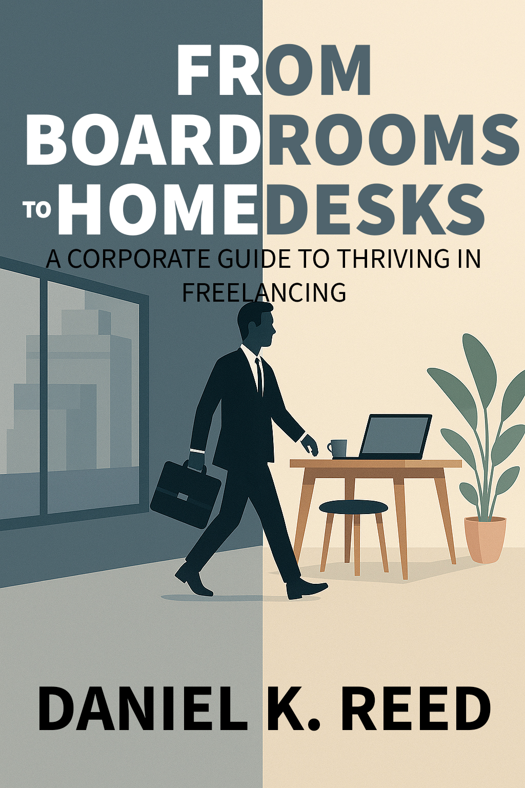

Author | Freelancer | Corporate Escapee
A Corporate Guide to Thriving in Freelancing
Are you ready to break free from the 9-to-5 grind and start your freelance journey? This book guides you step-by-step on how to transition, find clients, and build a sustainable freelance career — even if you're coming from a corporate background.
Daniel K. Reed is a former corporate strategist who successfully transitioned into full-time freelancing. Through his book, he shares his journey, lessons, and methods to help others make the leap confidently and sustainably.